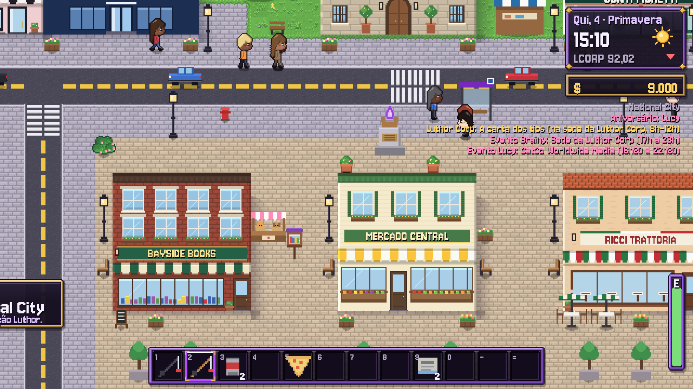

Fundação Luthor
A Fundação Luthor faz obras para a cidade. Na mesa da Fundação, na sede, doe os itens pedidos (ou o dinheiro). A obra aparece na cidade na noite seguinte e dá um benefício para sempre. A Praça só abre com as outras cinco prontas.
Coreto do Parque
Um coreto branco no meio do parque, para música no domingo e conversa fiada no resto da semana. (no Parque Central)
Doações
Benefício
Conversas rendem 10% mais amizade.
Peixaria do Píer
Uma barraca para os pescadores venderem direto na orla. O Seu Joca vai ser o primeiro cliente. (na praia, ao lado do píer)
Horta Comunitária
Canteiros abertos para o bairro inteiro plantar. Quem doa as primeiras mudas ganha a primeira cesta. (no canto sul do parque)
Doações
 Tomate ×3
Tomate ×3- Manjericão ×3
 Morangos ×2
Morangos ×2 Abóbora ×1
Abóbora ×1
Benefício
Toda segunda tem uma cesta de ingredientes nos canteiros.
Lanternas do Bosque
Postes novos em volta do lago do bosque, para ninguém mais tropeçar em pinha no escuro. (no Bosque Bayside)
Doações
 Concha ×3
Concha ×3 Vidro do Mar ×2
Vidro do Mar ×2 Estrela-do-mar ×1
Estrela-do-mar ×1 Pena de Gaivota ×2
Pena de Gaivota ×2 Pinha ×2
Pinha ×2
Benefício
Mais coletáveis aparecem todos os dias.
Biblioteca do Bairro
Uma caixinha de livros livres: pegue um, deixe outro. As lojas vizinhas prometeram apoiar. (entre a Bayside Books e o Mercado)
Doações
Benefício
15% de desconto na Bayside Books e no Mercado Central.
Praça da Fundação
O monumento que fecha a primeira fase da Fundação Luthor, com uma inauguração para a cidade inteira. (na calçada em frente ao Mercado)
Doações
 Licença de Software ×2
Licença de Software ×2 Núcleo Athena ×1
Núcleo Athena ×1 Coral ×1
Coral ×1 Trevo de 4 Folhas ×1
Trevo de 4 Folhas ×1- $5.000
Benefício
Inauguração com a cidade toda e +1 coração com todo mundo.
